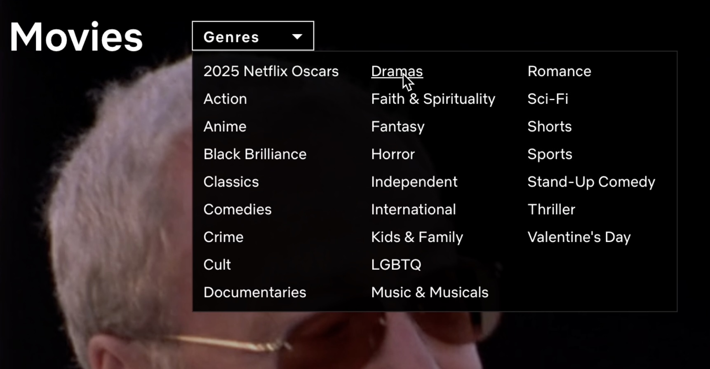
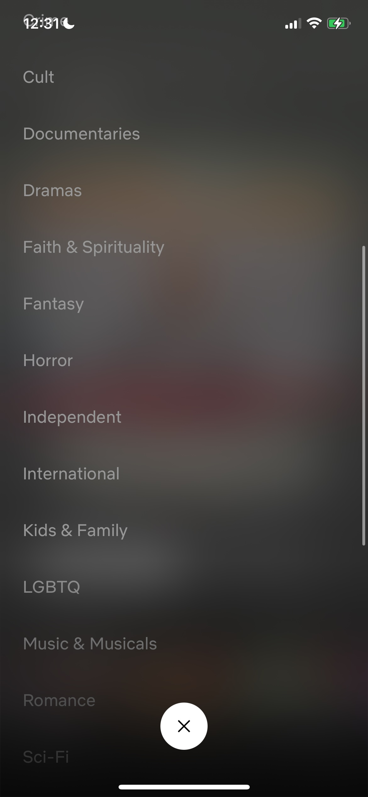
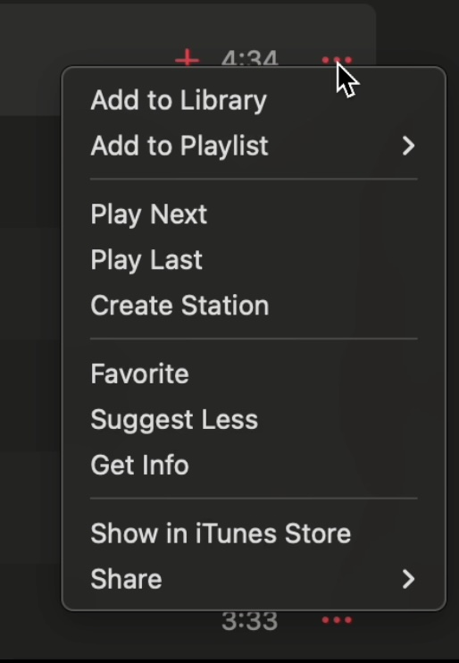
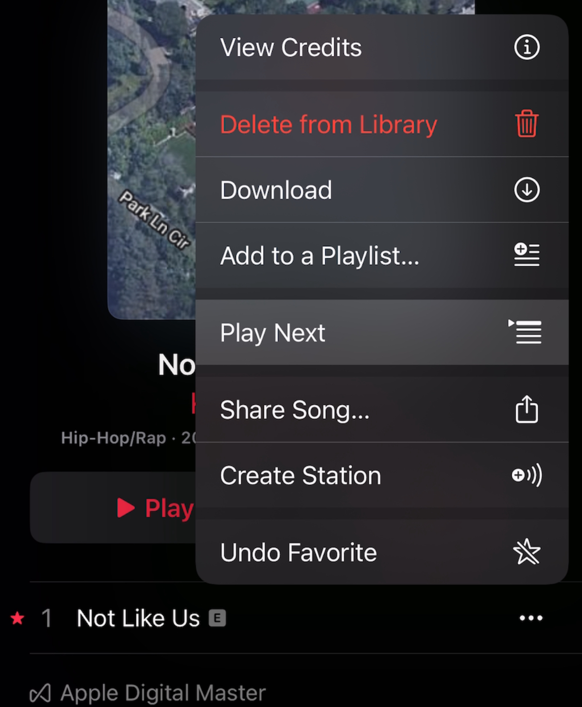
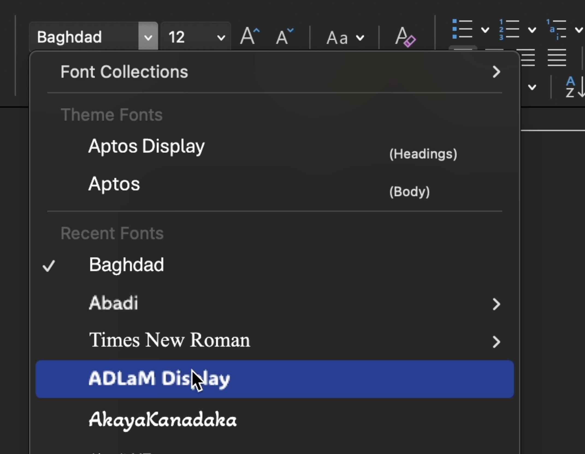
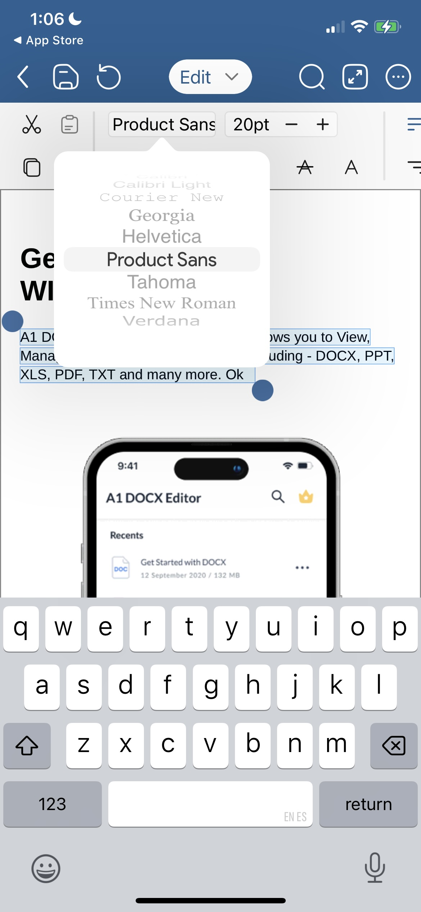
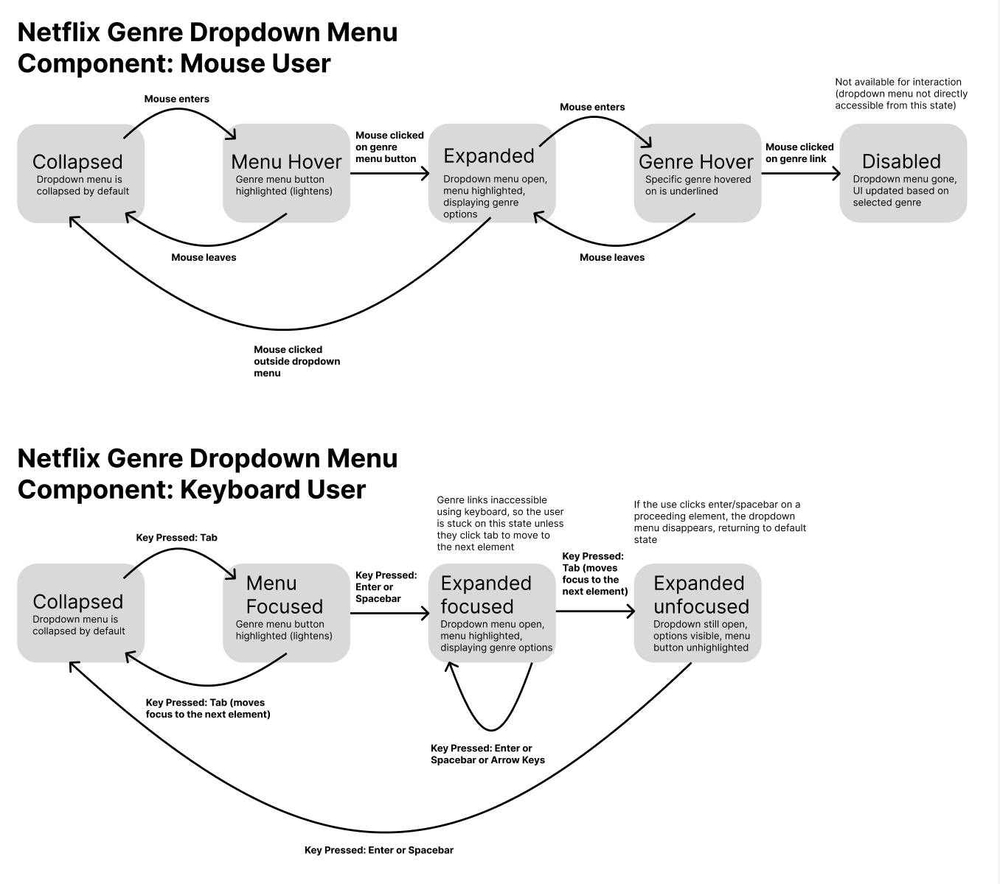
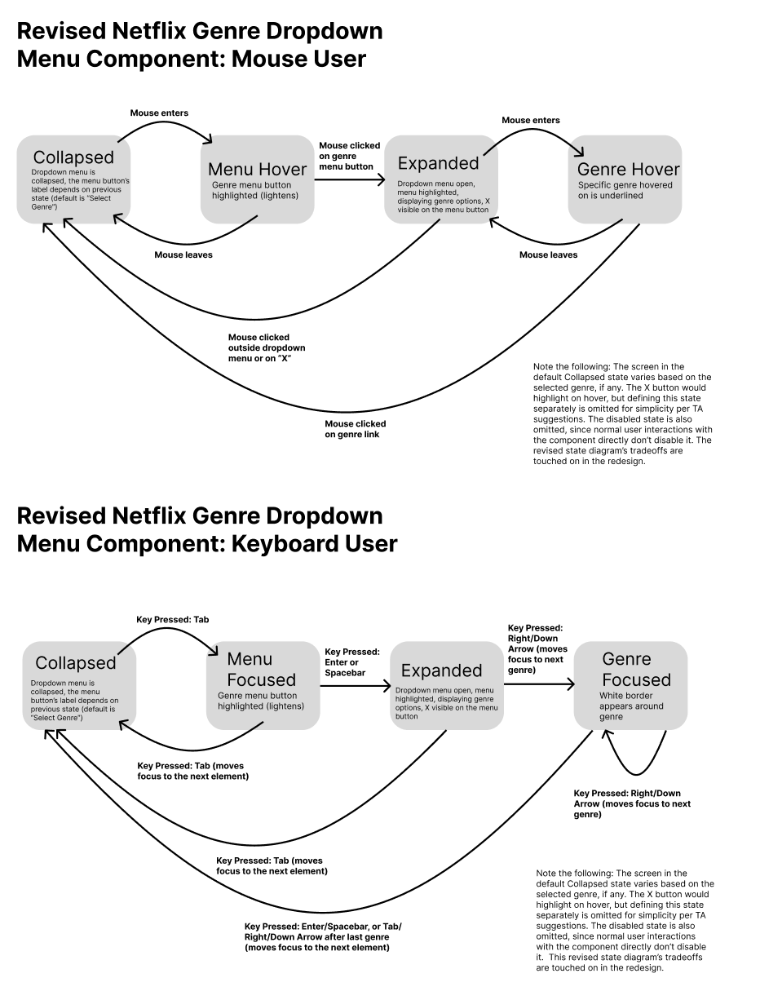
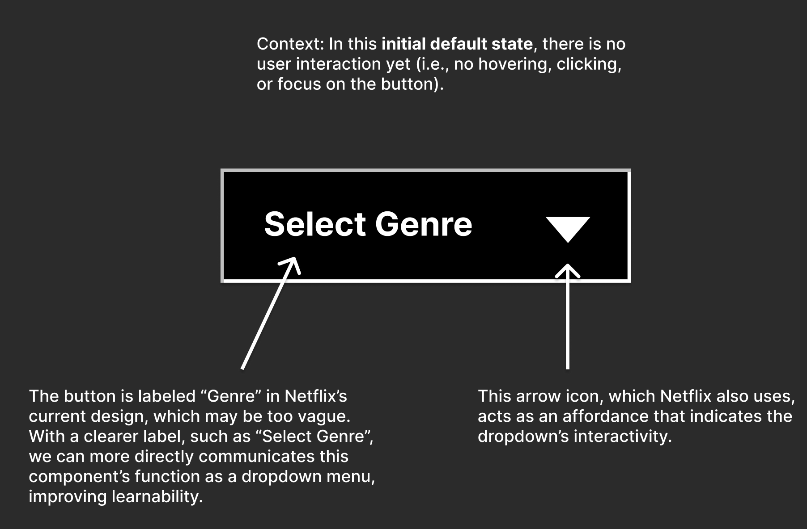
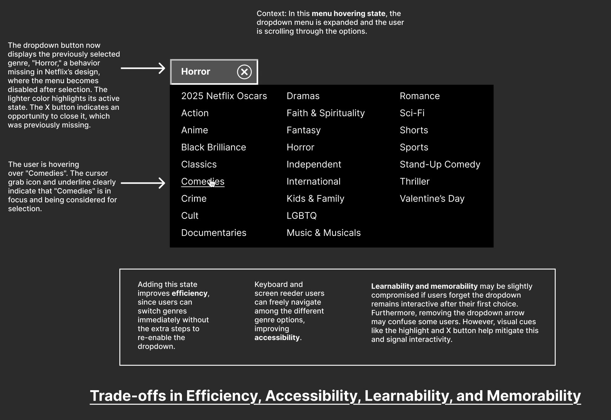

Dropdown menu navigating different sports categories.
Dropdown menus are a common UI element used to present different choices to a user in a compact space,
Although they are used widely
across the web, their usability and accessibility can vary significantly. Some are smooth and intuitive, while others feel like a
puzzle you never signed up for. Netflix’s genre dropdown, for example, disables itself after selection, making it frustrating for users who want to switch categories.
In this case study, we will
compare different instances of dropdown
menus across applications, analyzing their input and output features. Then, we will examine Netflix's genre
dropdown menu more closely
by creating state diagrams that model user interaction. Finally, based on our analysis, we will propose a
redesign of Netflix's genre dropdown menu to
enhance its usability and accessibility.
Popular Examples of Dropdowns
To better understand how dropdowns work, let's take a look at dropdown menus across three different
applications that you may
have come across.
Netflix (Genre Dropdown)
Netflix’s genre dropdown menu enables users to browse content categories. Below are images of
its web
and mobile versions.
Web Version

Mobile Version

Apple Music (Three-Bar Menu)
Apple Music’s three-bar dropdown menu is used for accessing song options. Here’s a comparison
of its web
and mobile versions.
Web Version

Mobile Version

Microsoft Word (Font Menu)
Microsoft Word’s font dropdown menu is used for choosing the text's font. Below is a
comparison of its
desktop and mobile versions.
Desktop Version

Mobile Version

Input Methods: How Users Interact with Dropdowns
Dropdown menus components behave differently across applications based on input method.
This section summarizes how each of the three application's respond to mouse/touchpad, keyboard, and touch
inputs. Surprisingly,
I noticed that Netflix had limited keyboard functionality without a screen reader. Furthermore, its desktop
version's dropdown menu
lacked a clear "X" button to close it, unlike its mobile version's.
Mouse/Touchpad
Keyboard
Touch
Netflix (Genre Dropdown)
Click the Genres button to open the dropdown. Scroll and click to select a genre. No
clear “X” button to close—clicking outside dismisses it.
Tab navigates to the dropdown, Enter opens it. Arrow keys navigate, Enter selects, Esc
closes. Limited keyboard support without screen reader.
Tap to open "All Categories" dropdown. Scroll and tap to select a genre. Click "X" to
close (not available on desktop).
Apple Music (Three-Bar Menu)
Click the three-bar menu to open. Options appear as an overlay (e.g., "Add to Playlist").
Click outside to close.
Tab navigates to the three-bar menu. Spacebar/Arrow keys highlight options. Esc closes
the menu. Better keyboard support than Netflix.
Tap three-bar menu to expand options. Tap a selection (e.g., "Add to Playlist"). Tap
outside to exit.
Microsoft Word (Font Menu)
Click to open the font dropdown. Scroll to browse fonts, click to select. Click
outside to close.
Tab navigates through the Ribbon toolbar. Enter selects font menu, Arrow keys navigate.
Esc closes the menu. Best keyboard support of the three (Autocomplete allows typing
font names).**
On iPhone app, highlight text to activate the font menu. Scroll to browse fonts (no text
input). Tap to select, tap outside to close.
Output Feedback: State Change Feedback
Dropdown menus provide visual, textual, and screen reader feedback (VoicOover on mac) to help users
understand
their current state. This section summarizes how each of the three applications communicates state changes
through visual cues, text updates,
and screen reader focus order. For Netflix, note that a static textbox (not available for interaction) of
the selected genre replaced the dropdown menu once a genre was selected,
effectively disabling it. I found this behavior strange, as it limited the user's ability to easily change
their selection.
Visual Feedback
Textual Feedback
Screen Reader/Focus Order
Netflix (Genre Dropdown)
Dropdown button highlights on hover. Dropdown expands on click, forming a rectangle.
UI updates based on selection (e.g., new horror content displayed below).
Hovered genre name is underlined. Selected genre replaces the dropdown menu.
Announces genre button. Announces each linked genre category. Logical focus order:
Genre button → Genres listed sequentially (top to bottom, left to right).
Apple Music (Three-Bar Menu)
Selected option is highlighted on hover/click (e.g., play next song highlighted). Three-bar
menu highlighted briefly on click.
Selected option (e.g., "Add to Playlist") updates UI accordingly. Some options provide
confirmation text (e.g., "Added to Playlist").
Announces each option out loud, includes number of options. Logical focus order: More
Button → Each option listed sequentially. Conveniently lists submenus too (e.g., share with
multiple sharing options).
Microsoft Word (Font Menu)
Dropdown arrow highlighted on click while menu is active. Hovered fonts highlight as the
cursor moves.
Selected font name appears in the selection box. Font name is highlighted in the text box
after selection.
Reads each font name aloud when hovered. Logical focus order: Toolbar → Dropdown → Fonts
listed alphabetically. Submenus announced for fonts with variations (e.g., "Arial → Arial
Bold").
State Models
We now use the following state diagrams to examine our Netflix genre dropdown menu component more closely.
Let's first
model the dropdown's state for mouse and keyboard users as it is currently implemented i.e, unrevised.

As seen above, we notice some issues with the current state model. Notice how it isn't possible to navigate
throughthe dropdown menu using the keyboard alone.
It is also inconvenient how the dropdown menu becomes disabled once a genre is selected, which strains the
user's ability to change their selection efficiently.
To see what type of interactions the model above is capturing, watch the video below of a user interacting
with the Netflix genre dropdown menu.
Let's now model the revised state for mouse and keyboard users. This revised model will address the
gaps we identified in the previous model. Importantly, this model allows users to reopen the dropdown to
change
their selection after one has been made. Also notice how the revised model allows for keyboard navigation
and includes a
clear "X" button to close the dropdown.

Redesigning Netflix’s Genre Dropdown
To address the issues we encountered above, we propose the following redesign for Netflix's genre dropdown menu.
We've created a mock design for the initial dropdown state. We've also
added a mock design for the selected genre state, which includes a "Change Genre" button to reopen the dropdown.
Each design
includes annotations to explain the changes made.


Reflection
Based on Kat Holmes’ talk on Inclusive Design, we will now reflect on this case study and the impacts of our
proposed design choices. In terms of accessibility and usability, both Microsoft Word's font menu and Apple Music's
three-bar menu fully support keyboard navigation and provide hover highlights for clear visual feedback. A major mismatch
I noticed is that the original Netflix’s dropdown’s lack of keyboard support, implicitly assuming interactions are mouse-based.
Another mismatch manifests when the dropdown becomes inactive after selection, restricting users who may need to switch genres
frequently or motor impaired users who may struggle to efficiently reopen the menu. Furthermore, Netflix lacks an obvious dropdown
closing or collapsing affordance. In contrast, Microsoft Word’s dropdown menu’s autocomplete feature improves accessibility,
allowing users with limited dexterity to type instead of scrolling. Our redesign addresses these by ensuring continuous
interactivity, clear focus states, and improved keyboard support. I added keyboard functionality (refer to state models) and an
"X" button (refer to component redesign) to improve usability, especially for assistive technology users. While mouse and mobile
users are often prioritized in design, keyboard and screen reader users are less prioritized and at times even neglected. This project highlights how
designing with accessibility in mind benefits all users, creating a superior experience for everyone.